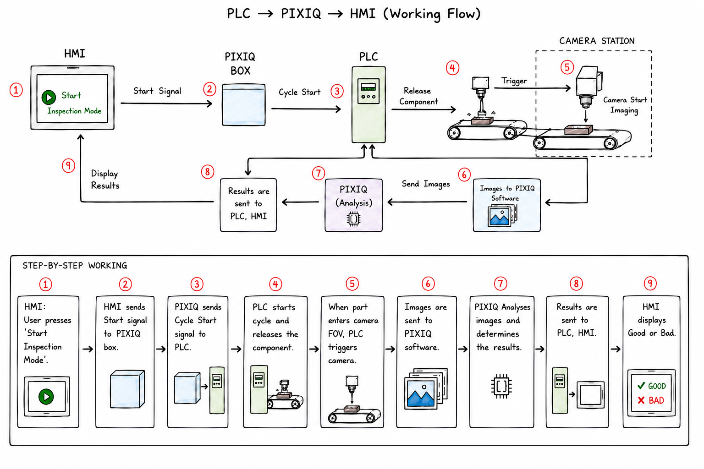

What is Machine Vision-Based MPI?
From Human Eye to Digital Eye
Magnetic Particle Inspection (MPI) is a trusted method for finding invisible cracks in materials. Traditionally, this process relies on a trained human inspector examining a part under a blacklight, looking for the tell-tale fluorescent glow of iron particles that have gathered along a defect.
Machine Vision-Based MPI elevates this process by replacing the human eye with a high-resolution industrial camera and specialized inspection lighting. The system automatically captures a perfect, repeatable image of the part — turning a physical inspection into digital data that can be analyzed by a computer. This simple change lays the foundation for a much smarter and more reliable quality control process.
Why Use Artificial Intelligence?
Overcoming the Limits of Human Inspection
While human inspectors are skilled, the process is naturally subjective and affected by unavoidable human factors:
- Fatigue: Inspecting thousands of parts is demanding and leads to missed defects — especially late in a shift.
- Inconsistency: What one inspector flags, another might not. This variability changes from shift to shift and person to person.
- No Digital Record: Manual inspection doesn't create a data trail. It's difficult to track trends, prove quality to a customer, or analyze why defects are occurring.
Artificial Intelligence solves these problems. By pairing the machine vision camera with a powerful AI, the system learns to identify defects with superhuman consistency and speed. The AI doesn't get tired or have a bad day. Every part is inspected using the exact same criteria, every single time — creating a reliable, objective, and fully auditable record of quality.
How the AI Works
The AI isn't programmed with a fixed list of rules like "if it's long and thin, it's a crack." Instead, it learns what defects look like from examples — much like a human does, but with a perfect memory and pixel-level precision.
We don't need years of defect data to get started. The PIXIQ system is designed to become an expert on your production line through a practical, phased approach:
We show the AI hundreds of images of your good parts. It builds a "digital fingerprint" of what a flawless part looks like. From this point on it operates as an anomaly detector — any image that deviates from this fingerprint is flagged for a human expert to review. The system delivers value immediately, before it has ever seen a real defect.
As the system flags anomalies, a human operator provides feedback: "Yes, that's a crack," or "No, that's just a piece of dust." This feedback builds a small, high-quality dataset of confirmed good and bad examples. The AI begins to learn the specific visual characteristics that separate a true flaw from a harmless variation.
Once a sufficient number of confirmed defective parts are collected (typically around 150 examples), we fully train the AI on labeled examples. It studies the entire library with pixel-level precision, learning the subtle differences in texture, brightness, and shape that define different defect types. The AI doesn't just say "Fail" — it highlights the exact location of the defect on the image, so the operator sees precisely what was found.
Operators can flag AI mistakes directly from the interface. Corrections are saved and sent back to the engineering team. New data is incorporated into the next training cycle — so the AI grows more accurate with real-world production data over time.
Key Advantages
Integrating AI into your MPI process with the PIXIQ system delivers clear, measurable benefits:
- 100% Objectivity: Eliminates the guesswork and subjectivity of human inspection. Every decision is data-driven.
- Unmatched Consistency: The AI inspects every part with the same level of focus and precision, 24/7 — no shift changes, no fatigue.
- Speed: Inspection takes less than a second, easily keeping pace with even the fastest production lines.
- Traceability & Data: Every inspection creates a digital record — photographic proof of the quality of every part shipped, plus a dataset to help analyze and improve your manufacturing processes.
- Defect Localization: The AI highlights the exact location of a defect on the image, not just a pass/fail verdict — giving operators immediate visual confirmation of every finding.
- Configurable Sensitivity: The system can be tuned to balance aggressiveness (flagging everything suspicious) against throughput, based on your specific quality requirements.
- Non-Invasive: Works with your existing MPI equipment as a simple add-on, minimizing disruption to your current workflow.
System Overview
The PIXIQ system connects directly into your existing MPI line. Here is how the components fit together — from the part on the line to the operator screen and factory PLC.
+ Particles
Sensor
→ trigger
multi-angle
Controller
<100ms
HMI
+ images
→ rejection gate
+ analytics
The PIXIQ Controller sits at the centre — it receives images from the cameras, runs the AI, and simultaneously signals the factory PLC (to open or close the rejection gate) and updates the operator HMI. The cloud connection is optional and used for model updates and fleet-wide analytics.
Step-by-Step Process Flow
The diagram below shows how a single inspection cycle flows through the system — from the operator starting inspection mode on the HMI, through PLC triggering and image capture, to the AI result being returned to the PLC and displayed on screen.

PLC → PIXIQ → HMI working flow: from cycle start to Pass/Fail result
Project Lifecycle: What to Expect
From first conversation to live deployment, a typical PIXIQ MPI project follows a clear, structured path. Each phase has defined milestones and data requirements so you always know where you stand.
| Phase | Name | Duration | Defect Samples Needed | What Happens |
|---|---|---|---|---|
| 0 | Discovery & Setup | 1–2 weeks | 0 | Camera and lighting installation, PLC integration, image capture validation. We confirm the system can consistently capture inspection-quality images of your parts. |
| 1 | Anomaly Baseline | 1–2 weeks | 0 | The AI is shown 200–400 images of good parts only. It learns what a flawless part looks like and begins flagging anything unusual. The system is live — all anomalies go to a human reviewer. |
| 2 | Data Collection & Labeling | 2–4 weeks | 50–100 | Flagged anomalies are reviewed and labeled by your team or ours. This builds the first dataset of confirmed defects. Human review continues throughout. |
| 3 | First Supervised Model | 1–2 weeks | 100–150 | Once ~150 confirmed defective images are labeled, the first supervised model is trained, validated, and deployed in assisted mode — AI gives a verdict, human confirms every decision. |
| 4 | Pilot Validation | 2–4 weeks | 150+ | The model runs in parallel with human inspection on live production. Pass/Fail agreement is measured. Threshold tuning is performed to meet your quality criteria. |
| 5 | Full Deployment | Ongoing | Accumulating | The validated model runs autonomously. Human review is reserved for flagged edge cases. Model is retrained periodically as new labeled data accumulates. |
What the Numbers Mean in Practice
- Phase 1 can begin immediately — you do not need any defect data to start getting value from the system.
- 150 defective images is the minimum for a deployable supervised model. More data means better accuracy — 400+ examples is meaningfully more reliable.
- Total timeline from installation to autonomous deployment: 8–14 weeks, depending on how quickly defective parts are collected on your production line.
- Data collection is the critical path. In high-volume lines where defects are common, Phases 2–3 can close in days. In low-defect environments it may take longer — but Phase 1 keeps the system useful throughout.
During the early weeks, the unsupervised model flags anything that deviates from "good" — which means the false alarm rate is intentionally high. This is by design, not a flaw: the system is casting a wide net to ensure nothing is missed while it learns your specific production environment.
In practice, operators can expect to review 5–15 flagged parts per shift during Phase 1, dropping significantly as the model baselines. To manage this workload without fatigue:
- Flagged parts are routed to a dedicated manual review station, not held up at the inspection point — the line keeps moving.
- The HMI shows the exact region of interest the AI flagged, so the operator makes a quick confirm/dismiss decision rather than re-inspecting the whole part.
- Review burden typically drops to under 3 parts per shift by the end of Phase 2 as confirmed good-part variation is absorbed into the model.
- All operator decisions during this period are logged and fed back to improve the next training cycle.
Use Case: Connecting Rod Inspection
Connecting rods are critical engine components subject to extreme cyclic loads. Manufacturing defects — particularly surface cracks, laps, and seams — can lead to catastrophic engine failure. MPI is mandated for 100% inspection in automotive and aerospace applications.
MPI inspection in action — fluorescent particle indication detected and flagged by PIXIQ in real time
The Challenge
- Complex geometry requiring inspection across the full 360° surface
- Inspection time of 3–5 minutes per part creating a production bottleneck
- Manual throughput limited to ~150 parts per shift per inspector
- False negative risk of 5–10% due to operator fatigue
- 4 certified inspectors required for 24/7 coverage
- Fine cracks under 0.5mm width difficult to detect consistently
The PIXIQ Solution
A single industrial camera captures the connecting rod as it rotates in 20° increments, giving 18 images of the full surface in one inspection cycle. Each image is analysed by the PIXIQ AI as it arrives — anomaly detection and defect segmentation run in parallel across the image sequence — and a combined PASS, FAIL, or VERIFY result is returned with the defect highlighted on screen. FAIL parts are automatically diverted by a pneumatic gate before reaching the next station.
The system was trained on 500 known-good connecting rods. No defect examples were needed to go live. Defect-confirmed data collected during the pilot phase was used to refine the model over the following months.
Results After 6 Months
Return on Investment
| Item | Value |
|---|---|
| Annual labor savings (3.5 FTE inspectors) | $280,000 |
| Annual scrap reduction (fewer false rejections) | $45,000 |
| Warranty claim avoidance (escaped defects) | $150,000 |
| Payback period | 5.4 months |
| 3-year ROI | 1,658% |
Frequently Asked Questions
- Lighting geometry: Illumination is angled to minimise direct specular returns on the camera sensor. Diffused light sources spread the reflection away from the optical axis.
- AI robustness: The model is trained exclusively on images captured under your actual wet-inspection conditions, so it learns to distinguish genuine particle accumulation at a defect from the background shimmer of the liquid carrier. Reflections appear as a consistent, repeating pattern; true defect indications do not — and the AI exploits this difference.
Critically, this review burden is designed to be low-effort: the HMI routes flagged parts to a dedicated station and highlights only the region the AI questioned. The operator makes a quick confirm/dismiss decision — not a full re-inspection. Every decision is logged and fed back into the next training cycle, so the operator's time during this period directly accelerates the model's improvement.
Reach out to our technical team — we're happy to discuss your specific application.
🌐 www.dhvaniai.com · ✉️ info@dhvaniai.com